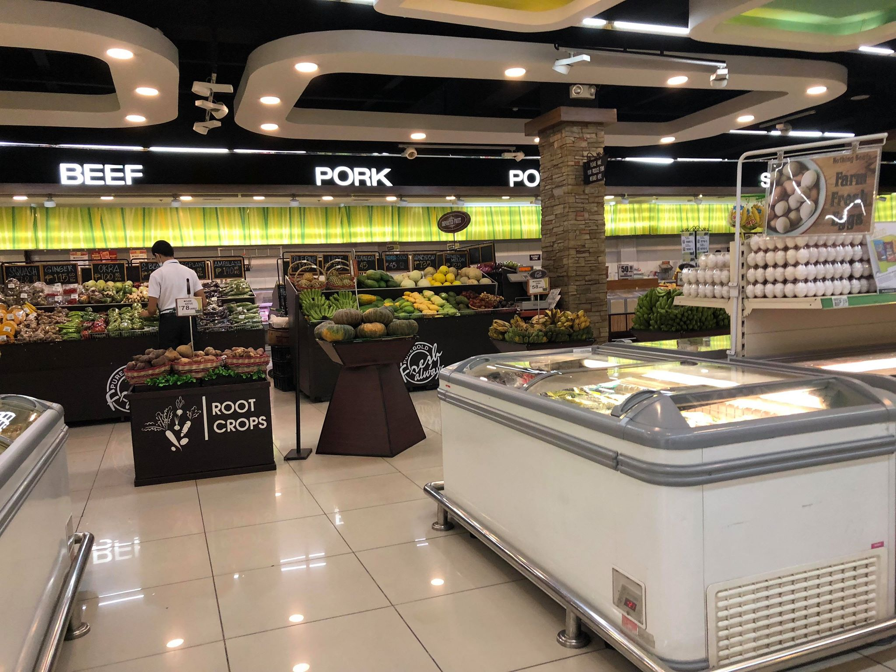
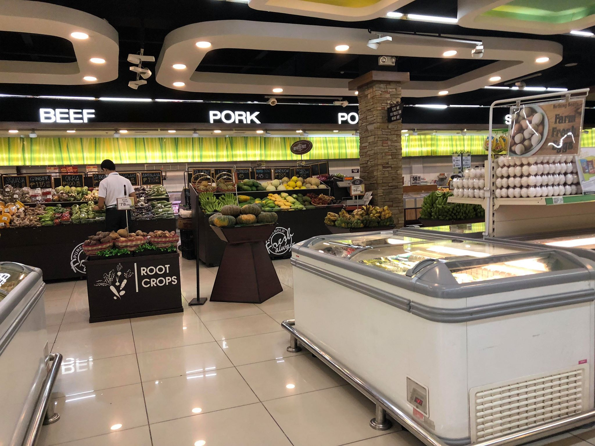

This baking store sells products like confectionary sugar, candies, cookies, almonds. Its flagship products are the boxes. Some products that I bought here were bread flour and wax paper as these were readily available in this store.


This baking store appears as a huge chocolate castle like place. It sells products like confectioners’ sugar and cupcake holder sheets and other baking goods.
 

The Puregold Supermarket along QA houses a huge variety of products such as baking needs, cereal, bread, dairy, meat, fruit, vegetables. This is one of the known Puregold branches that I feel is a good source of Cavendish bananas they are always found protected in plastic.


When compared with other supermarket chains like Puregold, Rustan’s generally houses a lesser variety of ingredients that are slightly more pricey. But I would seek out this particular branch along Tomas Morato for products such as Muscovado Sugar and Coco Sugar that are critical ingredients for my cookies.